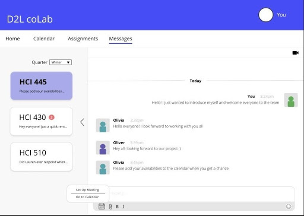

D2L coLab
Introduction
D2L coLab is an app designed to allow students to communicate about group projects. The app is intended to help in-class and online students collaborate on assignments. The app will integrate with the D2L (Desire to Learn) learning-management system, which is used by universities nationwide. The app gives students the ability to set up video meetings with classmates, participate in online chat sessions, have easy access to assignments from instructors, collaborate on shared documents, and assist with project management by allowing students to create and assign tasks to other team members and manage a team calendar. The app is available on both desktop and mobile in order to meet students where they are.
The Team
- Kathleen Domines
- Anna Markiewicz
- Natalie Roman
- Samantha Wanamaker
Project Goals
- Create an effective way for students to communicate with other students in their classes
- Ability to have video calls through the app
- Create a way to facilitate group work through the app
- Provide a way to add group tasks in the in-app calendar
- Give ability to prioritize assigned work from class and assigned group tasks
- Ability to add users’ availability schedule to the in-app calendar
- Provide a checklist of assignments and tasks to help keep track of what needs to be done
- Facilitate the interactions between in-class students of DePaul university with their online counterparts
Design Tenets
- Make it easy to access the features needed by the user
- Make the number to steps needed to achieve a goal minimal
- Users should be able to gather information on a page with a glance
- Make it easy to collaborate, communicate, and coordinate.
Design Process
Contents
Personas
Once we realized our app idea and the goals we wanted to achieve through the app, we created the personas to get a better idea of the type of users we want to build the app for. As we wanted this app to be used in conjunction with the existing D2L website, both of our personas will be DePaul University students.
Izzy

In-class student. 30's. Works full-time.
Izzy is a graduate student in the HCI master’s program at DePaul University. She is in her mid-thirties, works full-time in downtown Chicago, and attends classes in-person. She chose DePaul’s program because the downtown location makes it convenient for her to attend classes after work. Even though she enjoys her classes, working on group projects can be difficult. She spends her weekends with her family and catching up on homework, so it can be difficult to schedule meetings with other students, especially online students. Since Izzy is so busy with work and family, she finds it hard to find time to stay on top of the email, D2L notifications, and Slack notifications (which is often used to work on group projects with online students).
Olivia
Online student. 20's. Freelancer.
Olivia is a graduate student in the HCI master’s program at DePaul University. She is in her late twenties and works as a freelance graphic designer. Even though she lives on the East Coast, she chose DePaul’s program because it has a great reputation and is also offered completely online. Olivia enjoys her classes, however, she sometimes finds it difficult to participate in group projects due to scheduling issues and the lack of facetime with in-class students. She also finds that her flexible freelance schedule and the time difference makes it difficult to connect on projects, since most students seem to work full-time and be on Central time zone.
Scenarios
Once we created the personas, we made the scenarios to better showcase how they could benefit from D2L CoLab.
Izzy
Izzy is working on a group project for HCI 454 with two online students. Their project is due in one week and Izzy thinks it would be a good idea to meet with the group to discuss the status of their report. She opens the DePaul app, selects HCI 454, and opens the calendar to see the availability of her group mates. Izzy notices that everyone has availability the next day at 6pm, selects the group chat link, and messages her group mates to see if they can meet at that time. The two confirm that they are available and Izzy adds a group meeting to the calendar. Before the meeting, Izzy checks the task-list and compares it to the report. She checks off tasks that have been completed and prioritizes tasks that are not yet done. The next day, Izzy receives a notification of her upcoming meeting. The team reiterates tasks, confirms everyone is on the same page, and assigns Izzy to submit the final report once it is finished. Izzy and her group mates finish the final tasks and edit the report throughout the week. The app notifies the group the day before the report is due. Izzy messages the group to confirm with her group mates that the report is finalized. Through the app, Izzy submit the final report and notifies everyone that it is successfully submitted.
Olivia
Olivia is taking HCI 445: Inquiry Methods and Use Analysis online for Winter Quarter 2020. She was just assigned to a group project with three of her classmates. She opens the DePaul app and logs in to see her classes on the home screen. Olivia selects HCI 445 and sees her members’ names, her assigned tasks, and upcoming deadlines for the project on the home page. Olivia opens the apps’ calendar to add the days and times she is available to meet. She then clicks on a link to a chat room with her group mates and types a message to introduce herself. She then receives chat messages from the other members within the next 15 minutes. Olivia and her group members have to submit a report introduction, interview notes, and an affinity diagram in two weeks. Olivia opens the menu to select the group’s task-list and sees that another group member has added the tasks and their appropriate deadlines. She assigns herself the task to write the introduction. Olivia finishes the introduction a week early and posts it on the group’s document in the app for her group members to review it.
Design Charettes
We began our design process with a design charrette where each member of our group created a few designs for the mobile and desktop application of our app. Then we shared and compared, picking the features we liked best from each of our designs and coming to a decision as to which ones we should incorporate into the app.

Then we created another sketch of the features we agreed upon to serve as a guideline for the development of our app.
Mood Board
During this process, we also came up with a moodboard that details the image we want our app to achieve - a collaborative app to connect students at DePaul University.
View the full mood board here.
Digital Narrative Prototype
With our personas, scenarios, and sketches in hand, we were ready to present our idea to our stakeholders (i.e. our professor and our classmates) in order to earn their buy-in and get the green light for the project.
To accomplish this, we created a digital narrative prototype (aka, a video) that presented our ideas in their full glory.
Mid-Fi Prototypes
With the goal of user testing in mind, we began creating our mid-fi prototypes. We created our prototype through Figma, keeping in mind our project goals and the final sketch we created from our design charrette. As we had a lot of features we wanted to create, we decided in order to keep the length of testing to a reasonable amount and to get the best feedback, we would focus on the most important aspects of our app - messages, with video call/meeting set-up features, and the calendar, with the ability to create tasks for group members and set up meetings.
Mobile screen for messages and calendar
Desktop screen for assignments
Desktop screen for messages
From our first presentation of our app to the class, there was a remark that we should make the recording function more obvious to the user. Previously, we just had a camera icon in place, but in our new edit we also placed a label so users will know exactly what this function is.
Mobile screen for video messages
User Testing
Once we were happy with our prototype, we created the script to use for our user testing. We decided to have each task tested separately by mobile and desktop and by participant (barring one participant who completed both mobile and desktop tasks). We chose our participants based on our personas; we needed participants that were familiar with D2L or another comparable educational institution's learning-management system.
Users were asked to complete the following tasks:
- Set up a meeting in the chatroom
- Set up a meeting via the calendar
- Assign a task to team member via the calendar
- Assign a task to a team member via a report (an assignment)
Quantitative Findings
The data gathered from the five participants was very enlightening. We asked each participant to rate the difficulty of their task on a scale of 1-10 with 1 being the easiest and 10 being the most difficult.
Qualitative Findings
After discussing the results of testing, the group noted that the following observations were made amongst the majority of test participants:
- Participants found setting up a meeting via the calendar more intuitive than setting up a meeting in the chatroom.
- When in the calendar, it was difficult to see how to add a new entry since the “add” icon was towards the bottom of the screen.
- In the calendar (desktop), participants were confused about the different calendar “views” presented in the right-hand menu.
- When in the chatroom, users did not expect to find the option to set up a meeting in the “+” menu. They associate “+” menus with adding a photo or document to a chat. They expressed preference for a more intuitive “calendar” icon outside of the “+" menu.
- Participants expressed confusion over the difference between an “Assignment” and a “Task.”
- Participants were also confused about the difference between “self tasks” and “group tasks.”
View the full test plan and results here.
With these findings in mind, we revised our prototypes.
Changes to Hi-Fi Prototypes
We took the results of user testing into consideration as we developed our hi-fi prototypes.
As many participants remarked that setting up a meeting through the message function to be unintuitive, we decided to create a calendar icon that would take the user to the calendar where they could set up a meeting.
We adopted a similar method for the desktop version of the chat screen. Since there is more space in the desktop, we opted to get rid of the plus icon and instead spread out the features using icons.
Another comment we had was to the visibility of the plus icon in the calendar. As it was not immediately observable to the user, we changed the color of the icon to better grab the users’ attention so they can find the features of the calendar faster.
We also added a create icon in the desktop version of the calendar as well. Some participants found it difficult to finish the task involving the calendar as they did not notice the plus icon on the bottom right. So we moved it to a more prominent place at the top of the screen and gave it a brighter color as well.
We also made the status of an upcoming task more prominent by displaying the status in red.

Conclusion
Looking at the current iteration of D2L coLab, there are definitely additional areas to flesh out for the project. We received great feedback from our users, but believe that more testing would be useful if we developed the full task functionality. We learned through this project that combining the different ideas that each member had for the app was a difficult process and required clear communication and compromises from each member of the group. While the target audience of the app were users similar to ourselves, it was interesting to see that some users saw certain functions as unnecessary or had a hard time navigating during the user testing. It highlighted the necessity of user testing in order to create the best product possible.
Style Guide
The thing that was most important when creating the style tile was to make sure that all of the elements that were added onto the page followed the idea and style that all team members had decided on. We wanted to make sure that the style was simplistic and made sure that all areas of importance contained a larger text and displayed in a way that would allow the user to make sure they knew how each element would function. The colors were taken from Coolors.co that will auto generate colors to create a theme that would work for the specific idea that you are working towards. We had already wanted the same or similar blue color from D2L to consistently match that website and every other color would just be a complementary color.
The buttons differ from the regular text in order to indicate that a user is able to click on that button. An outline means that the button has not been selected yet, while a filled button means that it has been selected. The feedback implies that some action has been done. We wanted a font that was familiar and comfortable to users who are familiar with the D2L website. We chose Open Sans in regular and semibold, depending on the level of importance for the element on the screen.